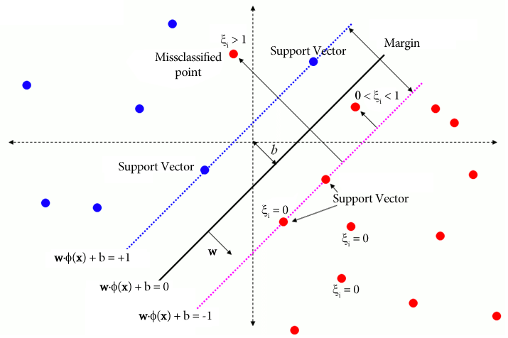

Keyboard shortcuts:
N/СпейсNext Slide
PPrevious Slide
OSlides Overview
ctrl+left clickZoom Element
If you want print version => add '
?print-pdf' at the end of slides URL (remove '#' fragment) and then print.
Like: https://wwwcourses.github.io/...CourseIntro.html?print-pdf
Support Vector Machines (SVM)
Created for

Iva E. Popova, 2024,

Introduction to SVM
What is SVM?
- Support Vector Machines (SVM) is a supervised learning algorithm used for classification and regression tasks.
- SVM is highly effective for high-dimensional datasets and is particularly useful for binary classification problems.
History of SVM
- SVM was first introduced by Vladimir Vapnik and his colleagues in the 1990s.
- The original motivation behind SVM was to solve classification problems with linear separation but has since been extended to handle non-linear cases using kernel functions.
Mathematical Foundation of SVM
Mathematical Foundation of SVM
Hyperplane and Decision Boundary
- SVM aims to find the optimal hyperplane that separates data points of different classes.
- In 2D, the hyperplane is a line. In 3D, it’s a plane.
- For example, given points from two classes, SVM will try to draw the line or plane that best separates these classes.
import numpy as np
import matplotlib.pyplot as plt
from sklearn import svm
# Create dataset
X = np.array([[1, 2], [2, 3], [3, 3], [5, 6], [6, 7], [7, 8]])
y = [0, 0, 0, 1, 1, 1]
# Fit the SVM model
model = svm.SVC(kernel='linear')
model.fit(X, y)
# Plot data points
plt.scatter(X[:, 0], X[:, 1], c=y)
# Extract model parameters
w = model.coef_[0]
b = model.intercept_[0]
# Compute the decision boundary
x_min, x_max = X[:, 0].min(), X[:, 0].max() # Use min and max of X values
x_plot = np.array([x_min, x_max])
y_plot = -(w[0] * x_plot + b) / w[1]
# Plot decision boundary
plt.plot(x_plot, y_plot, '-r')
plt.show()
Margin and Support Vectors
- Margin is the distance between the hyperplane and the closest data points from either class.
- Support vectors are the data points closest to the hyperplane and are critical for defining the position of the hyperplane.

Objective Function
- The objective of SVM is to maximize the margin between the two classes, which can be formulated as a constrained optimization problem: $$ \min \frac{1}{2} ||w||^2 \quad \text{subject to} \quad y_i(w \cdot x_i + b) \geq 1 $$
- Where:
- $ \min \frac{1}{2} ||w||^2 $ is Minimization term. It minimizes the norm (or length) of the weight vector $w$. Minimizing $||w||^2$ corresponds to maximizing the margin between the two classes, as the margin is inversely proportional to $||w||$.
- $ y_i(w \cdot x_i + b) \geq 1 $ is the constraint which ensures that all points $x_i$ are correctly classified:
- If $y_i = 1$ (for one class), the condition ensures that the point lies on or beyond the margin on the correct side of the hyperplane.
- If $y_i = -1$ (for the other class), the condition ensures that the point is correctly classified on the opposite side of the hyperplane.
- Example:
-
In a binary classification problem, the goal is to find the values of the weight vector $w$ and the intercept $b$ such that:
- The margin between the two classes is maximized (i.e., the hyperplane is as far as possible from the closest data points of either class).
- All data points are correctly classified, meaning they are either on or outside the margin boundaries.
Kernel Trick
Kernel Trick
Linear vs Non-Linear Data
- SVM works well for linear separable data, but most real-world data is non-linear.
- To handle non-linear data, SVM employs the kernel trick to map data into higher-dimensional spaces where a linear hyperplane can separate the classes.

Common Kernels Used in SVM
- There are several common kernels used in SVM:
- Linear Kernel: Suitable for linearly separable data.
- Polynomial Kernel: Used when the data is not linearly separable in the original space.
- RBF (Radial Basis Function) Kernel: The most popular kernel for non-linear problems, as it maps data to an infinite-dimensional space.
Example
- If the data points form concentric circles, the data is non-linearly separable in 2D. However, SVM with a kernel can map these points to a higher-dimensional space, where they become linearly separable.
from sklearn.datasets import make_circles
from sklearn.svm import SVC
import matplotlib.pyplot as plt
# Create circular data
X, y = make_circles(n_samples=100, factor=.3, noise=.05)
# Fit SVM with RBF kernel
clf = SVC(kernel='rbf')
clf.fit(X, y)
# Plot data and decision boundary
plt.scatter(X[:, 0], X[:, 1], c=y)
plt.show()
Soft Margin and Hard Margin
Soft Margin and Hard Margin
Hard Margin SVM
- Hard Margin SVM requires that the data is perfectly linearly separable with no errors.
- This type of SVM does not allow for any misclassification.
- Example:
- If the dataset is perfectly separable, such as two sets of points with no overlap, hard margin SVM can find a perfect hyperplane separating the two classes.
Soft Margin SVM
- Soft Margin SVM introduces a tolerance for misclassification, allowing some points to be on the wrong side of the margin or hyperplane.
- The trade-off between margin size and classification error is controlled by the regularization parameter $C$.
- Example:
- In cases where the data is noisy or not perfectly separable, such as with overlapping classes, soft margin SVM provides a balance between maximizing the margin and allowing some misclassification.
model = svm.SVC(C=1.0, kernel='linear')
model.fit(X, y)
Optimization and Regularization
- The objective function for soft-margin SVM becomes: $$ \min \frac{1}{2} ||w||^2 + C \sum \xi_i \quad \text{subject to} \quad y_i(w \cdot x_i + b) \geq 1 - \xi_i $$
- Where $C$ is the regularization parameter and $\xi_i$ are slack variables that measure the degree of misclassification. 
- Slack variables relax the hard margin constraints, allowing some points to be misclassified or fall within the margin, thus providing more flexibility for noisy or overlapping datasets.
- The $C$ parameter can be adjusted to control how tolerant the model is to misclassification.
- Large C: Focuses on minimizing errors (rigid boundary).
- Small C: Focuses on maximizing the margin (more tolerance for misclassification).
{kind=link}
Applications of SVM
Applications of SVM
Text Classification
- SVM is widely used for text classification tasks such as spam detection, sentiment analysis, etc.
- Its ability to handle high-dimensional data makes it highly suitable for processing text data represented as feature vectors.
- Example:
- SVM can classify emails as spam or not spam by analyzing word frequencies in the text and transforming these frequencies into feature vectors.
from sklearn.feature_extraction.text import TfidfVectorizer
from sklearn.svm import SVC
# Example data
texts = ["Free money", "Work from home", "Meet singles", "Earn $5000 now", "This is not spam"]
labels = [1, 1, 1, 1, 0] # 1: spam, 0: not spam
# Transform texts to feature vectors
vectorizer = TfidfVectorizer()
X = vectorizer.fit_transform(texts)
# Train SVM classifier
clf = SVC(kernel='linear')
clf.fit(X, labels)
Image Recognition
- SVM is effective in image classification tasks such as facial recognition, object detection, and handwriting recognition.
- By using different kernels, SVM can capture complex patterns in image data.
- Example:
- SVM can classify images of handwritten digits by transforming pixel intensities into feature vectors and applying a suitable kernel to find the decision boundary.
Bioinformatics
- SVM has been successfully used in gene classification and protein structure prediction in bioinformatics.
- The high dimensionality of biological data makes SVM a suitable choice for these applications.